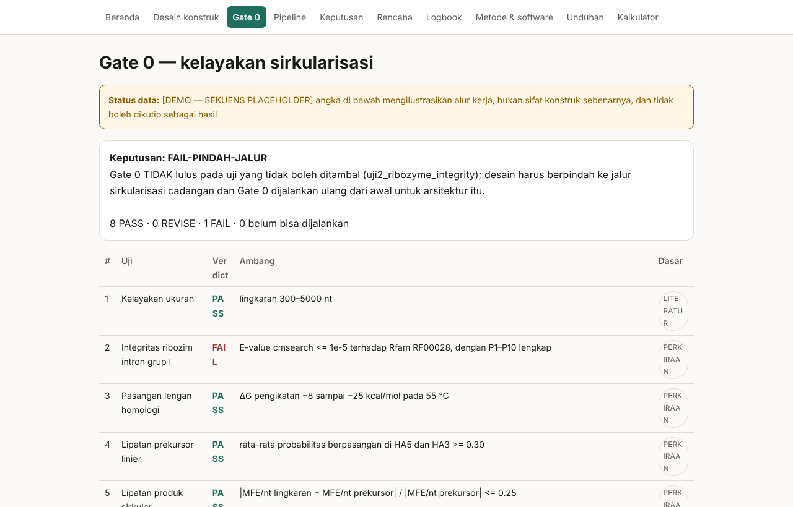
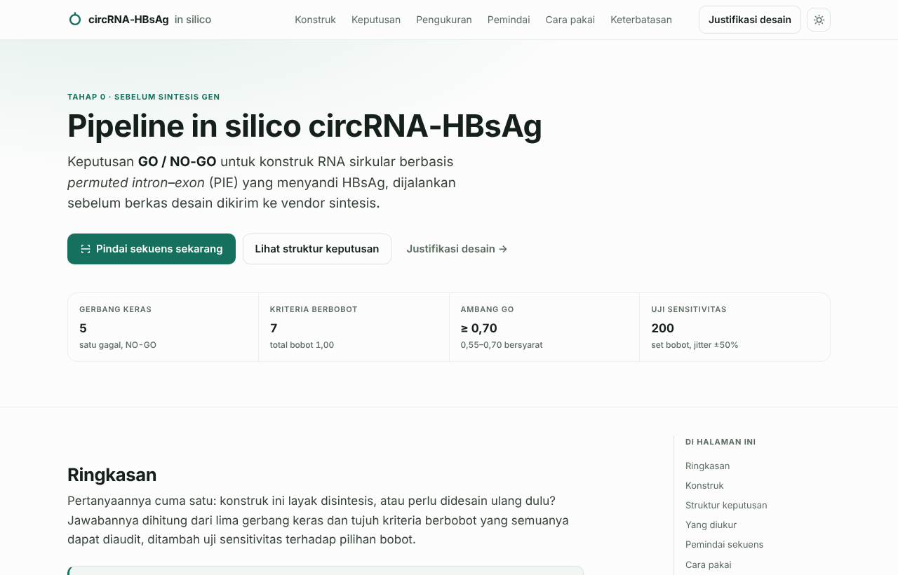
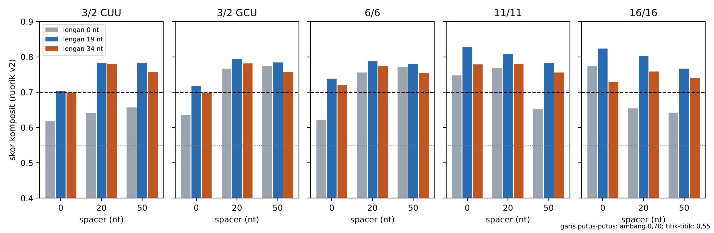
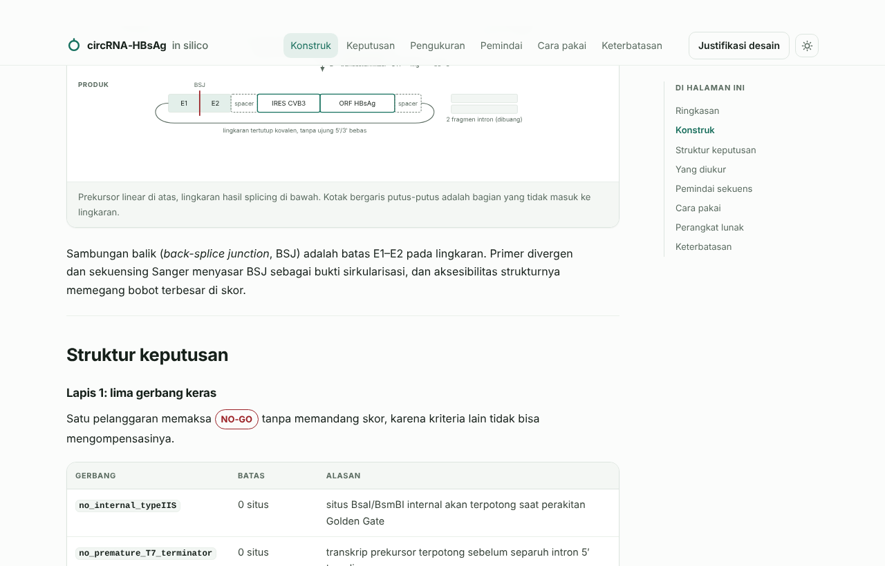

Juli 2026 — [PERLU DIISI JEK]
Belum ada sumber untuk bulan ini di project files, thread, maupun git. Isi: kegiatan, hasil, bukti (foto/berkas).
42 catatan, 26 Oktober 2026 – 20 November 2026 (26 Okt = catatan sumber tertua; Juli – 25 Okt menunggu isian jek). Semua waktu dalam WIB (UTC+7). Angka hasil in silico tidak boleh dibaca sebagai data eksperimen; setiap entri menyebut sumbernya. Bagian yang belum punya sumber ditandai [PERLU DIISI JEK], bukan dikarang.
Titik = satu catatan; klik untuk melompat ke entrinya. Fase 2 (pipeline) dan fase 3 (dokumen) berjalan paralel pada 16–18 Nov.
Belum ada sumber untuk bulan ini di project files, thread, maupun git. Isi: kegiatan, hasil, bukti (foto/berkas).
Belum ada sumber. Isi: kegiatan, hasil, bukti.
Belum ada sumber. Isi: kegiatan, hasil, bukti.
Belum ada sumber. Draf skripsi awal dan kumpulan PDF jurnal baru muncul di project files pada 26 Okt, tanggal itu hanya tanggal unggah, bukan tanggal penulisan.
Project files berisi draf TA awal dan kumpulan PDF literatur yang dipakai sebagai rujukan (tanggal ubah berkas 26 Okt 14:33–14:36 UTC, OMNIA.pdf 15:02).
Sumber: tanggal ubah berkas
Dari draf skripsi, jek meminta rencana langkah demi langkah: in silico, perakitan (Golden Gate atau Gibson), optimasi IRES, dan optimasi teknis lain.
Keluaran
Artifact: Rencana Teknis circRNA-HBsAg: In Silico sampai Perakitan dan QCArtifact: Pitch Deck TA circRNA-HBsAgSumber: pesan thread
Meminta deck dari awal sampai akhir seperti OMNIA.pdf, flowchart metode dengan parameter checkpoint, standar kerja di Benchling/SnapGene, dan penjelasan apakah model AI perlu dilatih dulu.
Sumber: pesan thread
Hasil pertama ditolak ('jelek sekali'). Arahannya: jangan meniru persis, hindari gaya generik AI, utamakan gambar dan diagram bergaya BioRender.
Keputusan
Sumber: pesan thread
Thread 'Rancang circRNA vaccine HBsAg' ditandai selesai (resolved_at 7 Nov 16:46 UTC). Tidak ada catatan lain antara 27 Okt dan 15 Nov di sumber yang bisa dibaca.
[PERLU DIISI JEK] kegiatan 27 Okt – 15 Nov bila ada.
Sumber: pesan thread
Pipeline in silico Tahap 0/1 untuk konstruk circRNA-HBsAg (PIE, IRES CVB3).
Sumber: commit git · commit b8ba286
jek menempelkan ringkasan sumber seminar (Chen/Yale, Arraystar, Szabo/Stanford, Giem). Tiga thread dimulai: deck Canva, draf TA sampai sebelum Bab Hasil, panduan produksi. Empat menit kemudian jek menjelaskan bahwa maksudnya hanya prompt, dan ketiga thread dihentikan.
Sumber: pesan thread
Software wajib gratis, optimasi dibantu AI, website dan repo GitHub untuk proyek in silico, hanya satu IRES, dan kelayakan sirkularisasi HBsAg diprediksi in silico lebih dulu.
Keputusan
Sumber: pesan thread
Beberapa balasan antara 16:02 dan 16:09 UTC dialihkan otomatis ke model lain oleh pengaman sistem, dan thread pipeline sempat ditolak. Prompt lengkap dikirim ulang pada 16:06 dan thread pipeline, deck, dan TA berjalan.
Sumber: pesan thread
Sandbox tidak bisa mengunduh dari GenBank/Addgene (proxy hanya meloloskan GitHub dan PyPI). Thread meminta tiga sekuens dan mengambil keputusan sementara.
Keputusan
Sumber: pesan thread
Dua docx baru di project files; draf asli tidak disentuh.
Keluaran
[TA] Skripsi_circRNA-HBsAg_ITB_v2_BabI-III.docxTutorial_Produksi_circRNA-HBsAg_in-silico_in-vitro_in-vivo.docxSumber: tanggal ubah berkas
Modul inti (ViennaRNA, RNAplfold, optimizer kodon, skor GO/NO-GO) dijalankan ujung ke ujung dengan sekuens acak berlabel DEMO.
Sumber: pesan thread
Sembilan uji Gate 0 dan design_lock.json (9f92380); content/ menjadi sumber tunggal untuk situs, docx, dan naskah dek (4d423fd); Uji 2 memakai Infernal 1.1.5 dan model Rfam RF00028 dengan kontrol positif (1884cb4); label DEMO untuk keluaran placeholder (b14be9f).

Sumber: commit git · commit 9f92380, 4d423fd, 1884cb4, b14be9f
Satu parameter per iterasi: lengan homologi 40→20 nt meloloskan Uji 3; GC spacer 0,55 meloloskan Uji 9. Uji 2 tetap FAIL pada data demo sehingga keputusan FAIL-PINDAH-JALUR. Skrip 01–12, aturan Snakemake gate0, laporan Gate 0, CITATION, CHANGELOG.

Sumber: commit git · commit 5800f65, 8ac61eb
Sekuens placeholder, tanpa gerbang keras gagal. Angkanya tidak dipakai di dokumen TA karena tidak ada nukleotida asli.
Sumber: pesan thread
24 trial NSGA-II, 16 titik Pareto; spacer 25/50 nt, tanpa lengan homologi. Khusus sekuens placeholder.
Angka ini kemudian digantikan (lihat 18 Nov): dihitung sebelum batas GC/poly-U disatukan dengan Gate 0.
Sumber: pesan thread
jek meminta rencana optimasi in silico yang komprehensif (macOS, anggaran terbatas, gratis, otomatis, skala big data) dan semua logbook dan notebook masuk GitHub dengan website yang bisa diakses. Persetujuan membuat repo diberikan 01:37.
Sumber: pesan thread
Pipeline, repo, website: BLOK 2, 3 (Gate 0), 4, 8, 9, 12. TA, expected results, protokol: BLOK 5, 6, 7, 10. Deck: BLOK 11. Design lock dijaga konsisten lintas ketiganya.
Sumber: pesan thread
Permintaan membangun ulang situs dengan toggle tema, daftar isi, dan pemindai sekuens yang berjalan di peramban.
Sumber: pesan thread
URL repositori dikonfirmasi jek dan pipeline di-push.
Sumber: pesan thread
Situs terbuka tanpa login di circrna-hbsag-insilico.vercel.app dengan halaman justifikasi desain. Deploy dikirim sebagai berkas, bukan lewat Git, sehingga push berikutnya belum otomatis ikut terdeploy.

Sumber: pesan thread · https://circrna-hbsag-insilico.vercel.app
Empat dokumen BLOK 5, 6, 7, dan 10 masuk project files (SOP 14 tabel).
Keluaran
SOP_in-vitro_circRNA-HBsAg_BLOK5.docxProtokol_in-vivo_circRNA-HBsAg_BLOK6.docxHasil-Diharapkan_Troubleshooting_Interpretasi_BLOK7.docx[TA] Skripsi_circRNA-HBsAg_ITB_BLOK10_BabI-III.docxSumber: pesan thread
Dua ilustrasi baru, penanda bagian, nomor halaman. Pada 23:58 UTC deck dibangun ulang penuh mengikuti gaya deck contoh jek (latar putih, aksen merah).
Sumber: pesan thread · https://www.canva.com/design/DAHbGz4z2_4/edit
Bahan, alat, resep bufer dan medium, langkah per tahap sampai QC, kontrol, troubleshooting, keselamatan. Nomor katalog bertanda perlu verifikasi karena tidak berasal dari sumber proyek.
Keluaran
Protokol_Lengkap_in-vitro_circRNA-HBsAg_v1.docxSumber: pesan thread
40 trial, 24 titik Pareto; spacer 50/30 nt polyAC, lengan 9 nt. Menggantikan 0,7228. README, PLANNING, dan LOGBOOK repo diperbarui.
Sumber: commit git · commit 3d987b6
SOP, protokol in vivo, troubleshooting, TA Bab I–III, protokol in vitro, dan slide 9–10 deck memakai prekursor 1827 nt, lengan 20 nt, skor 0,6922 dan 0,7437.
Sumber: pesan thread
Atas permintaan jek (20:04 UTC): garis besar alur in vitro 10 tahap, rincian per tahap, konsep optimasi, bobot dan ambang kriteria, lima gerbang keras. Halaman 23–30; slide utama tetap 22.
Sumber: pesan thread
jek meminta skripsi docx komprehensif yang merujuk jurnal (gambar open access), dan analisis in silico yang menghubungkan HBsAg dengan IRES.
Sumber: pesan thread
AF081 hanya fragmen 276 nt (92 aa, tanpa ATG). Lima pertanyaan terbuka: pakai fragmen atau ORF S penuh, intron/spacer/lengan belum ada, batas IRES, bagian kuning untuk jek, dan bobot skor yang beda dari kode repo.
Keluaran
[TA] Skripsi_circRNA-HBsAg_ITB_Lengkap_v1.docxSumber: tanggal ubah berkas
Keputusan jek atas pertanyaan terbuka v1.
Keputusan
Sumber: pesan thread
Skor konstruk dasar 0,599 dengan IRES utuh 94,7%, tetapi kontrol negatif 0,619, lebih tinggi daripada dasar. Ditulis sebagai temuan, bukan disembunyikan.
Keluaran
[TA] Skripsi_circRNA-HBsAg_ITB_Lengkap_v2.docxSumber: tanggal ubah berkas
ORF S 226 aa diekstrak dari D00329.1. Paper memakai desain CIRC (intron utuh tanpa lengan homologi), sehingga rancangan mungkin berpindah dari PIE ke CIRC. File suplemen sekuens plasmid dikirim jek pukul 02:07.
Keputusan
Sumber: pesan thread
Garis besar, pipeline beserta alasan, kontrol positif dan negatif, urgensi, next steps, 16 pertanyaan penguji. Semua skor di dalamnya berasal dari sekuens simulasi dan bagian yang menunggu data ditandai [MENUNGGU].
Sumber: pesan thread · https://docs.google.com/document/d/1M5HdAo04KA283aI4nGFNmsWSeXc5qewB296SNXegb20/edit
Intron, ekson, dan lengan dari Shen 2025; IRES AF169665.1; ORF S dari D00329.1. V11 terbaik di 0,544, V1 gagal pada situs BsmBI, dan kontrol negatif V10 (0,568) malah tertinggi sehingga rubrik dinyatakan belum valid.
Keluaran
[TA] Skripsi_circRNA-HBsAg_ITB_Lengkap_v3.docx
Sumber: tanggal ubah berkas
Per kandidat dua versi: produk circRNA bertopologi circular (peta lingkaran tersedia) dan templat T7 linear. Masalah 'Circular Map tidak ada' diselesaikan dengan topologi di LOCUS.
Keluaran
genbank_SnapGene_Benchling.zipcircHBsAg_V*_circRNA_CIRCULAR.gbcircHBsAg_V*_templat_T7_LINEAR.gbSumber: tanggal ubah berkas
Memindai 45 desain (35 GO, 10 GO-BERSYARAT, 0 NO-GO), desain IRES terbelah tanpa bekas, mutagenesis kodon sinonim dengan CAI minimal 0,85. Ambang 0,70 tidak diturunkan. Rubrik lama diperbaiki setelah melihat hasil, dan itu ditulis terbuka di skripsi. Skor adalah prediksi yang dioptimasi terhadap rubrik yang sama dengan penilainya, bukan bukti sirkularisasi di lab.
Keputusan
Keluaran
[TA] Skripsi_circRNA-HBsAg_ITB_Lengkap_v4.docx
Sumber: tanggal ubah berkas
Untuk V14, V18, dan V1, ditambah penjelasan dasar mutagenesis, paper rujukan, dan prinsip optimasi (juga ke panduan Google Docs). Sedang dikerjakan di thread TA.
Sumber: pesan thread
Halaman ini.
Sumber: pesan thread
Skor komposit bukan ukuran yang sama sepanjang waktu: rubrik diganti antara 19 dan 20 Nov (lihat catatan 20 Nov), dan baris placeholder tidak sebanding dengan baris sekuens nyata.
| Tanggal | Apa | Skor | Keputusan | Status |
|---|---|---|---|---|
| 17/11/2026 | Demo dasar (placeholder) | 0,62 | GO-BERSYARAT | DEMO |
| 17/11/2026 | Optuna 24 trial (placeholder) | 0,7228 | GO | DIGANTIKAN |
| 17/11/2026 | Dasar setelah redesain Gate 0 (placeholder) | 0,6922 | GO-BERSYARAT | DEMO |
| 18/11/2026 | Optuna 40 trial (placeholder) | 0,7437 | GO | DEMO |
| 19/11/2026 | TA v2, dasar sekuens simulasi | 0,599 | rubrik belum valid | SIMULASI |
| 20/11/2026 | TA v3, terbaik V11 (sekuens nyata) | 0,544 | tak ada yang ≥ 0,70 | HASIL IN SILICO |
| 20/11/2026 | TA v4, terbaik V14 | 0,8694 | GO | HASIL IN SILICO |
Gambar hasil in silico berasal dari analisis proyek ini; tidak ada gambar jurnal berhak cipta di halaman ini.






Tidak ada sumber untuk periode ini di project files, thread, maupun git, jadi tidak ada yang ditulis di sini.
Untuk menambah entri, tambahkan blok di content/timeline.yaml lalu jalankan python -m tools.logbook
(atau kirim catatannya ke chat dan minta dimasukkan). Templat satu entri:
- id: e-2026-07-xx
phase: p0
when: "2026-07-15T00:00:00Z" # tanggal sebenarnya
precision: date
title: "Apa yang dikerjakan"
summary: "Hasil dan keputusan, satu-dua kalimat"
kind: file # thread | file | commit
outputs: ["nama berkas atau foto"]Sumbernya content/timeline.yaml: pesan thread proyek, tanggal ubah berkas di project files, dan riwayat git.
Generator tools/logbook.py menolak entri tanpa sumber, id ganda, atau gambar yang hilang, dan CI memeriksa bahwa halaman tidak kedaluwarsa.
Catatan lengkap pipeline ada di docs/LOGBOOK.md.